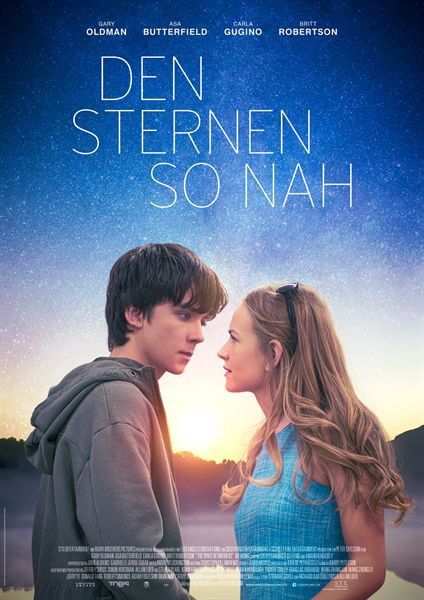

 Categoria: Romance Duracion : 121 minutos Año : 2017 Director: Peter Chelsom Pais: Estados Unidos Sinopsis: Gardner, un muchacho de dieciséis años de edad que ha crecido y vive en Marte, se enamora de una chica de la Tierra, con la que se ha estado comunicando, por lo que comienza su viaje para poder verla